An offline-first desktop application for Central Kurdish (Sorani) speech transcription, transcript curation, and ML dataset export. The default transcription engine is the user's fine-tuned OmniASR-7B Champion running locally on the GPU; everything works without a network, and any cloud assistance is opt-in and off by default.

Cortex Speech turns raw long-form audio (podcasts, interviews, audiobooks) into a clean, human-verified, license-aware speech dataset for Central Kurdish — a low-resource language. The workflow is:
importVAD chunkASR (7B Champion)align wordsjury adjudicatehuman reviewvalidateexport
Import is dispatched from the IPC commands import_audio_file / import_directory (commands.rs), which spawn a background worker so the UI never blocks. The ProcessingPipeline (pipeline.rs) then runs each file through:
| Stage | What happens | Key functions / files |
|---|---|---|
| Decode | Audio → 16 kHz mono PCM. Short files decode whole; long files stream in 90 s windows to bound memory. | decode_to_pcm_with_timeout, decode_pcm_windows, should_stream_decode (audio.rs, chunking.rs) |
| VAD chunk | Silero VAD finds speech regions; regions are merged/split/absorbed to honor min/max segment length (no cutting mid-word, no spanning long silences). | voice_activity_detection, plan_speech_chunks (chunking.rs) |
| ASR dispatch | Every production chunk is routed to the OmniASR-7B Champion. If it is unavailable, transcription stops; no smaller or cloud engine is substituted. | build_segments_from_pcm, transcribe (pipeline.rs) |
| Normalize | Sorani normalization (numerals, hamza/y-k variants) → normalized_transcript; all text stored Unicode NFC. | SoraniNormalizer (normalizer.rs) |
| Align (words) | Forced alignment gives per-word start/end timestamps for "tap-a-word" review. Uses the fine-tuned MMS-CTC; falls back to the bundled aligner / energy heuristic. | align_via_finetuned_mms, ctc_logits_to_word_timestamps (aligner.rs, wav2vec2_asr.rs) |
| Persist | Segments + multi-model hypotheses written transactionally to SQLite; FTS5 index auto-syncs. | persist_segments, insert_segments_batch (db.rs) |
| 7B primary pass | When the 7B is the engine, each segment is (re-)transcribed via the warm WSL server with retry. Fail-hard: if the server is unreachable the import is cancelled and its segments rolled back — no placeholder library. | run_primary_wsl_pass_for_import (pipeline.rs) |
After persistence the import callback triggers the jury on a separate WAL DB connection so heavy adjudication never starves the UI's get_segments.
Production settings are hard-pinned to WSL7B. Smaller ASR implementations remain available only to explicit offline diagnostic tools and tests; they are not production settings, UI choices, import routes, or re-transcribe fallbacks.
| Engine | model_id | Runtime | Role |
|---|---|---|---|
| OmniASR-7B Champion ★ | omniasr-wsl-7b | base omniASR-LLM-7B-v2 + LoRA adapter, fairseq2+PEFT, ~31 GB, WSL GPU server on 127.0.0.1:8799 | Primary / default. The owner's fine-tuned 7B; produces every import transcript. |
| OmniASR-CTC 300M | omniasr-ctc-300m | sherpa-onnx (ONNX), ~50 MB | Diagnostic-only ASR / historical provenance; never a production fallback. |
| OmniASR-CTC 1B | omniasr-ctc-1b | sherpa-onnx (ONNX), ~500 MB | Diagnostic-only ASR / historical provenance; never a production fallback. |
| Fine-tuned MMS-1B | finetuned-mms-ckb | Wav2Vec2-CTC via ort, ~970 MB, ~18.6% CER | Word alignment; its ASR implementation is diagnostic-only. |
The jury is a multi-tier confidence router that clears the easy cases automatically and escalates the rest to a human, running on its own DB connection.
jury_cloud_opt_in. jury/t2_listener.rs.ReviewMode.svelte is a distraction-free, one-clip-at-a-time loop. The human decision is authoritative and is never overwritten by later jury runs.
verified=false.human_accept / human_edit / human_reject verdicts.agent_examples (few-shot retrieval) so the agent improves on the owner's style.SQLite in WAL mode with FTS5 search and 25 versioned migrations. A single shared mutex-guarded connection serves UI commands; the jury uses its own WAL connection to avoid blocking reads during long operations.
| Table | Holds |
|---|---|
| speech_segments | The core row: raw_transcript, normalized_transcript, annotated_transcript, alignment_json (word timings + source window), verified, verdict, human_decision, confidence, audio QC fields, model_version_id, gold flag. |
| segment_hypotheses | Per-model drafts: (segment_id, model_id, transcript, confidence, model_version_id) — the source of the provenance badge + the jury vote. |
| source_transcripts | Whole-file reference transcripts (when configured). |
| agent_examples / gold_segments / eval_runs | Few-shot flywheel, held-out gold sets, evaluation scorecards. |
| model_versions / schema_migrations / segments_fts | Model registry, migration ledger, full-text index. |
Export builds an honesty-gated dataset. Three guardrails apply:
enforce_quality_gates) and a per-segment training grade — goldsilverreviewreject.Formats: JSON / JSONL, CSV (formula-injection-safe), Parquet, HuggingFace datasets, WAV/FLAC clips with metadata, and DPO preference pairs for fine-tuning.
The app is 100% offline by default. Cloud is reached only behind explicit, acknowledged opt-in:
cloud_llm_opt_in — optional refinement through the fixed Gemini 2.5 Pro cloud model.jury_cloud_opt_in — the fixed Gemini 2.5 Pro advisory T2 audio judge.settings.effective_llm_mode() downgrades cloud → none whenever the relevant flag is off, and the pipeline re-checks consent before building any refiner. API keys are never persisted in tracked files; voice is handled as biometric data with consent + license enforced before any publish/train step.
Recent work landed on main (verified by cargo fmt/clippy + 823 Rust tests, typecheck/lint + 129 vitest, 20 Python policy gates, and repo-hygiene):
| Commit | Change |
|---|---|
| 48bde15 | Integrated a 68-commit hardening line into the branch (30 conflicts reconciled, combining both sides' intent). |
| 1a9ae00 | OmniASR-7B Champion forced as the default + fail-hard import (cancel + rollback when the 7B server is down); sanitized client repo-tracked. |
| 4787d81 | Historical review feature at that commit: per-clip re-transcribe (7B / MMS-1B), model-provenance badge, mark-bad. Current production re-transcribe is champion-only. |